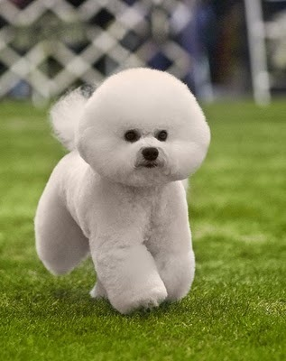

- 포메라니안
- 비숑
- 골든리트리버
비숑프리제는 무엇일까
비숑 프리제는 바빗을 닮아 바비숑이라는 이름으로 불렸던 견종이다. 털이 돌돌 말린 형태를 띠며, 사교성이 매우 좋은 소형견이다.

비숑 프리제(Bichon Frisé)라는 이름은 프랑스어로 ‘곱슬곱슬한 털’을 뜻합니다. 그 이름대로 비숑 프리제는 하얗고 곱슬곱슬한 털로 온 몸을 뒤덮고 있습니다. 그 모습이 매우 우아해서 많은 사람들의 사랑을 받는 견종입니다. 주로 프랑스와 벨기에에서 반려견으로 각광받기도 했습니다.비숑 프리제는 세계애견연맹(Federation Cynologique Internationale · FCI)이 분류한 10개 그룹 중 9그룹에 속합니다. 9그룹은 가정견 그룹으로 주로 작고 귀여운 소형견인 시추, 몰티즈, 빠삐용 등이 포함돼 있습니다. 비숑 프리제 역시 키는 약 23~30cm 정도이며 몸무게는 5~10kg 정도입니다.